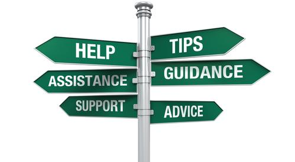

<div id="pagewidth" class="resources d-flex flex-column">

    <section class="container body-section flex-fill my-0 py-5 px-4" data-bs-theme="dark">
        <div id="twoColumnLayout" class="center contentspace pb-4">
            <h1>Resources</h1>
            <div class="columns">
                <div class="twoThird">
                    <p class="tab">
                        It can be very difficult to find resources on healthy polyamory, so we've compiled some of our top suggestions here. We hope you may find these useful!
                    </p>

                    <div>
                        
                    </div>
                    
                    <p class="intro">
                        <h5>Information, Communities, Health Services, and More</h5>
                    </p>
                    
                    <ul class="text-start">
                        <li>
                            <a href="https://discord.gg/49X7Yq7pa9" target="_blank">RVA Poly Colab - Discord Server</a> <!--- link is the same as used for QR code-->
                            <br> 
                            <span style="padding-left: 30px">A Discord server consisting of several polyamory-based groups local to Virginia.</span>
                        </li>
                        <li>
                            <a href="https://poly.land/start-here/" target="_blank">Poly.Land</a>
                            <br>
                            <span style="padding-left: 30px">An great resource for terms, tips, articles, and more, all about ethical nonmonogamy.</span>
                        </li>
                        <li>
                            <a href="https://www.reddit.com/r/polyamory/" target="_blank">Poly Subreddit</a>
                            <br>
                            <span style="padding-left: 30px">An open public forum where you can ask questions, read other's experiences, and find further resources about polyamory.</span>
                        </li>
                        <li>
                            <a href="https://www.facebook.com/KimchiCuddles/" target="_blank">Kimchi Cuddles</a>
                            <br>
                            <span style="padding-left: 30px">Comic artist <a href="https://www.tikvawolf.com/">Tikva Wolf</a> with an excellent talent for educating about polyamory through her art.</span>
                        </li>
                        <li>
                            <a href="https://solopoly.net/popular-posts/" target="_blank">Solo Poly</a>
                            <br>
                            <span style="padding-left: 30px">A blog from the perspective of being poly without having, or necessarily wanting, a primary/nesting-style relationship.</span>
                        </li>
                        <li>
                            <a href="https://ncsfreedom.org/" target="_blank">National Coalition for Sexual Freedom (NCSF)</a>
                            <br>
                            <span style="padding-left: 30px">A fantastic resource for anyone seeking psychotherapeutic, medical, and legal professionals who are informed about and open to alternative lifestyles.</span>
                        </li>
                        <li>
                            <a href="https://www.vdh.virginia.gov/richmond-city/clinical-services/" target="_blank">Richmond Health Department</a> (local)
                            <br>
                            <span style="padding-left: 30px">Richmond provides a number of clinical services available to the insured, uninsured and underinsured residents, as well as the general public.</span>
                        </li>
                        <li>
                            <a href="https://www.healthbrigade.org" target="_blank">Health Brigade</a> (local)
                            <br>
                            <span style="padding-left: 30px">Formerly Fan Free Clinic, they offer an array of medical, mental health, community outreach and care coordination services particluarly for low-income and uninsured persons.</span>
                        </li>
                    </ul>
                </div>

                <div class="card mx-auto">
                    
                    <div class="card-body">
                        <h5 class="card-title">Suggested Books</h5>
                        <p class="card-text">
                        <ul class="list-group">
                            <li class="list-group-item">
                                <a href="https://thornapplepress.ca/books/more-than-two/">More Than Two, Second Edition</a>
                                <br>by Eve Rickert and Andrea Zanin
                            </li>
                            <li class="list-group-item">
                                <a href="https://www.penguinrandomhouse.com/books/553912/the-ethical-slut-third-edition-by-janet-w-hardy-and-dossie-easton/">The Ethical Slut</a>
                                <br> by Janet W. Hardy
                            </li>
                            <li class="list-group-item">
                                <a href="https://www.harpercollins.com/products/sex-at-dawn-christopher-ryancacilda-jetha?variant=32206567440418">Sex at Dawn</a> 
                                <br> by Christopher Ryan and Cacilda Jethá
                            </li>
                        </ul>
                        </p>
                    </div>
                </div>
                
                <span class="bold">None</span> of these resources are paid advertisements. They have been used and shared by many of our members, and so we felt they might be helpful.
                <p class="tab">If you have other resources (or are a resource) and think they should be shared please <a href="contact.html">contact us</a> and we would be happy to evaluate them.</p>
                
            </div>
        </div>
    </section>
</div>
